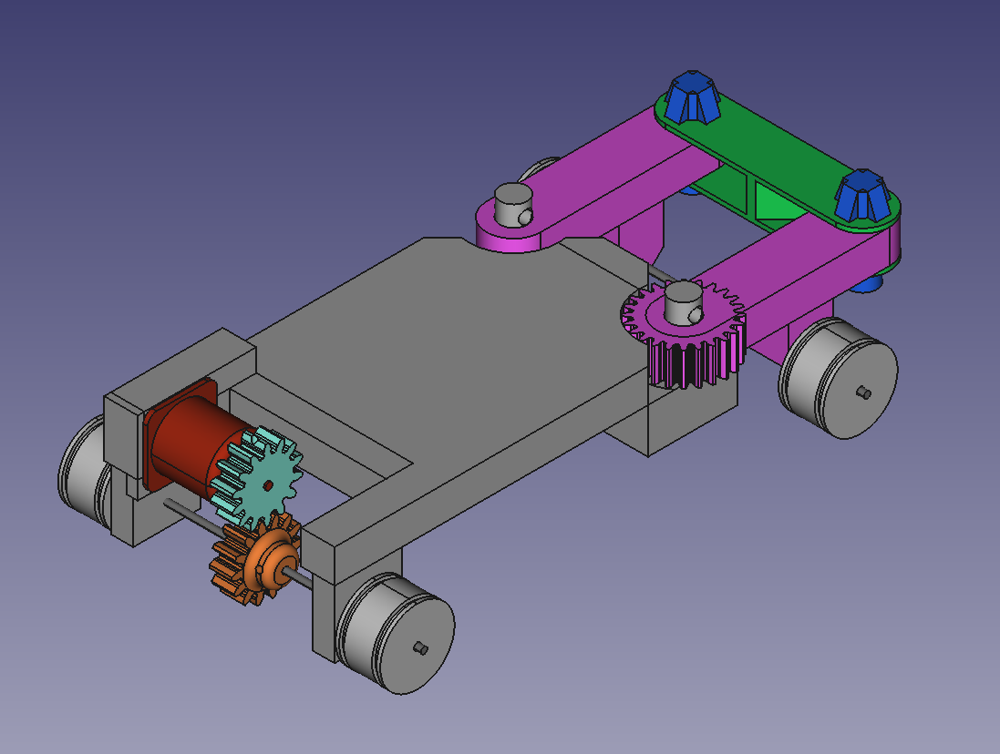

RC project: Snark


Homepage
Hobbies
├─ Microscopy
├─ Photography
└─ Biology
Engineering
├─ Resources
└─ Personal Projects
├─ RC Systems
│ ├─ MK I: Slipper
│ ├─ MK II: Snark
│ ├─ MK III: Headcrab
│ └─ MK IV: Houndeye
├─ 3D printer
└─ Rocket Analysis
This Website
Changelog
Contact Me
A video showcasing the Snark and it's function
Design
After the inital success of Slipper, I decided to make a more engineered and advanced craft. So, with no education, practice or prior knowledge about practical design and some free CAD software I found online I forged ahead, ready to create. The method of making the main body was quite simple: Make a rectangular brick, and chisel out any places I needed to put stuff. Simple. At the rear of the Chassis a large cut was made, in this was inserted the motor, two gears and an axle. The front had two large pins that two arms sat on, secrured by cotter pins. A bar connected these two with pin joints, allowing them to freely move. The right arm had a gear built into it that was connected to another gear in a 1:1 ratio. This second gear was connected to the servo. After testing, it was evident the servo needed a firmer connection to the car to actually turn the gear, so to fix this I designed and printed a housing for it. All axles were 3mm, and the wheels were 3D printed and secured to the axles with headless screws fitting into notches carved by a dremel. The wheels were made to fit LEGO tyres I had spare. The tyres held up really well under use conditions. The electronics were secured to the center by electrical tape, and the motor was secured by bolts slotted through drilled holes in the chassis. The solid 3D printed chassis did provide several problems, such as the two pins that served as connections for the steering arms. One of them broke, which was an easy fix (drill a hole through the chassis and broken pin, bolt them together with a bolt and washer). This did show that 3D printed parts did have strength limitations, which limits how small 3D parts can get.
After showing it online, somebody mentioned the sound it made while steering sound similar to the Snark from half life. The name stuck.

A Screenshot of an unfinished snark 3D model. The original model
is unfortunately lost due to a computer error that erased my disk
New ideas:
- Using 3D printing
- Using gear systems to control wheels
- Double-Armed Steering system
- Using steel axles
- Using LEGO tyres
Lessons learned:
- ESC was incapable of reversing, a more advanced model was needed
- Steel axles held up well under the load condtions
- 3D printed parts held up well under the conditons, however the larger the part the harder it was to get a successfull print, and the more it failed. 3D printed parts should be smaller in the future
- The servo required good attachment to the body to function
- The double-armed steering system performed well
- Gears worked really well, but a 1:1 ratio was a bit too fast
- The bolted joints used to attach the motor to the chassis and to repair the broken pin were amazingly effective and cheap